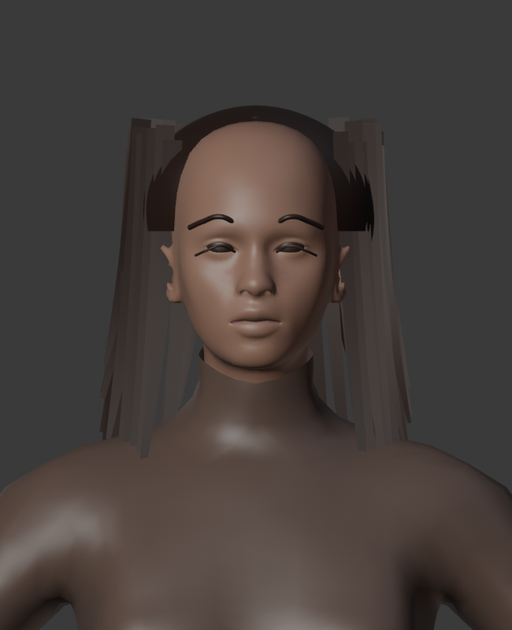
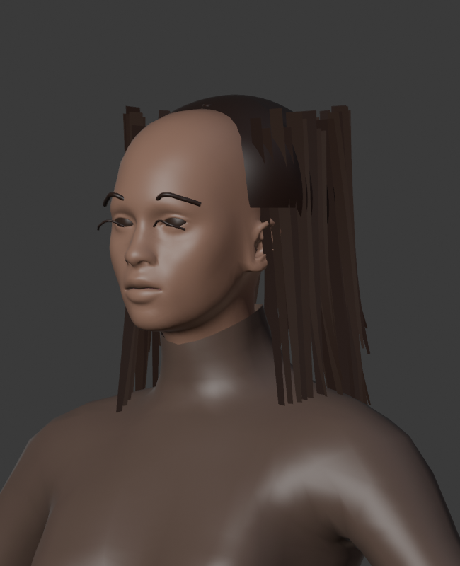
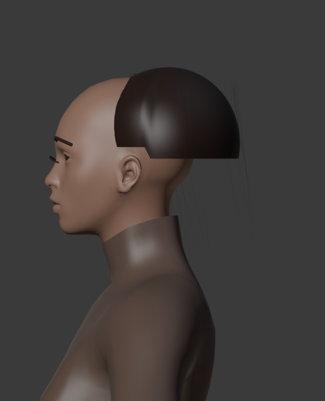

Problemi ancora aperti: acconciatura a fasce rigide, attaccatura troppo arretrata, iridi e palpebre non definitive, abbigliamento da ricostruire. I movimenti rimangono sospesi.
Render autentici generati dal file Blender ARCHIVISTA_VOLTO_OCCHI_V46.blend. Sono viste statiche per il confronto con le tre tavole originali; non sono immagini fotorealistiche e non rappresentano un avatar approvato.



Problemi ancora aperti: acconciatura a fasce rigide, attaccatura troppo arretrata, iridi e palpebre non definitive, abbigliamento da ricostruire. I movimenti rimangono sospesi.